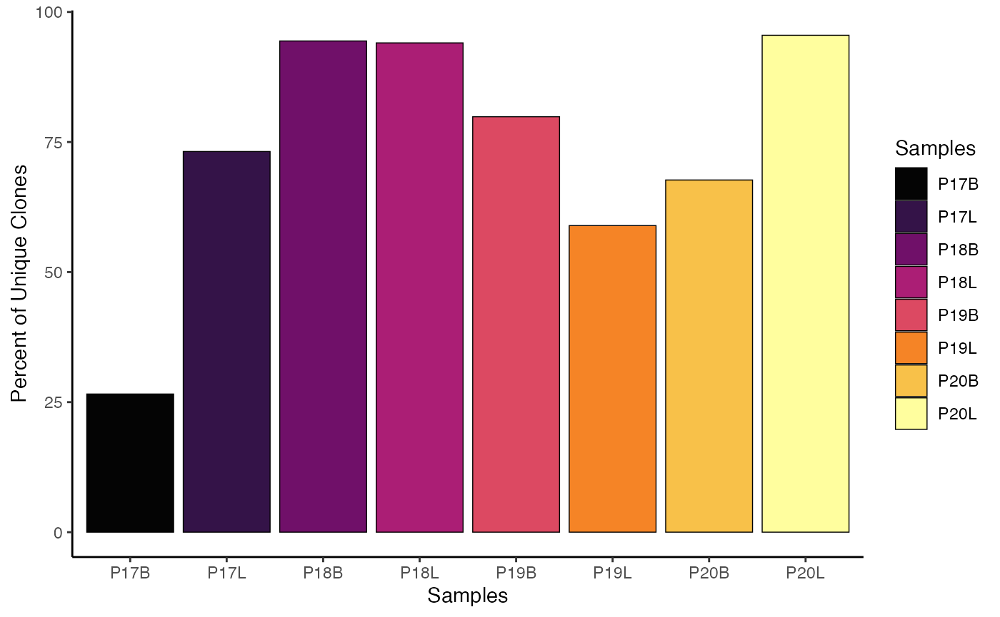
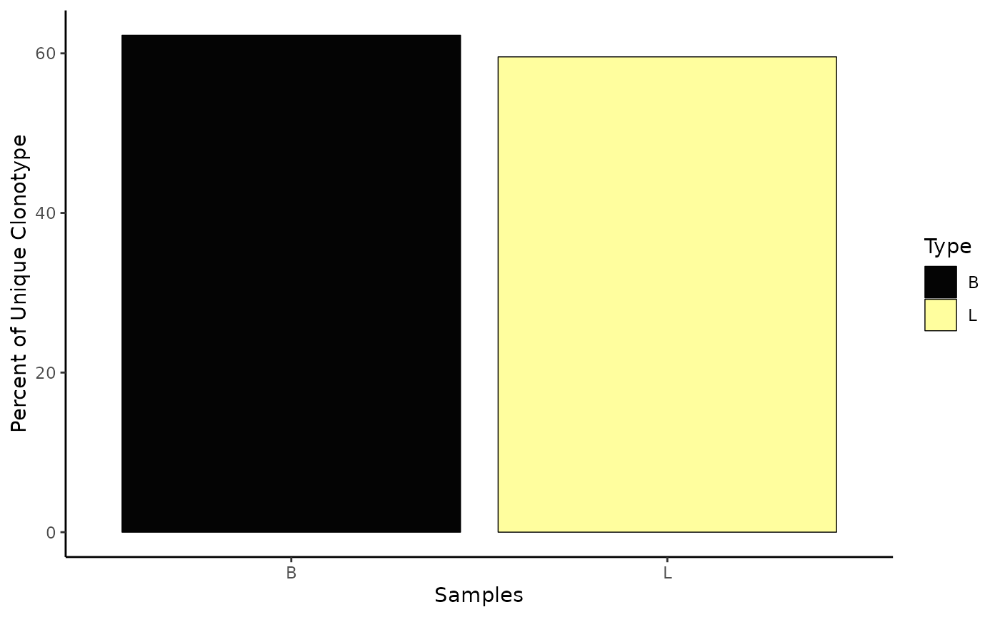
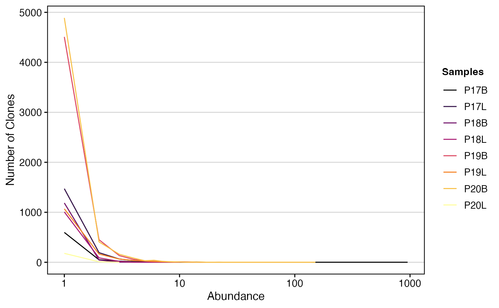
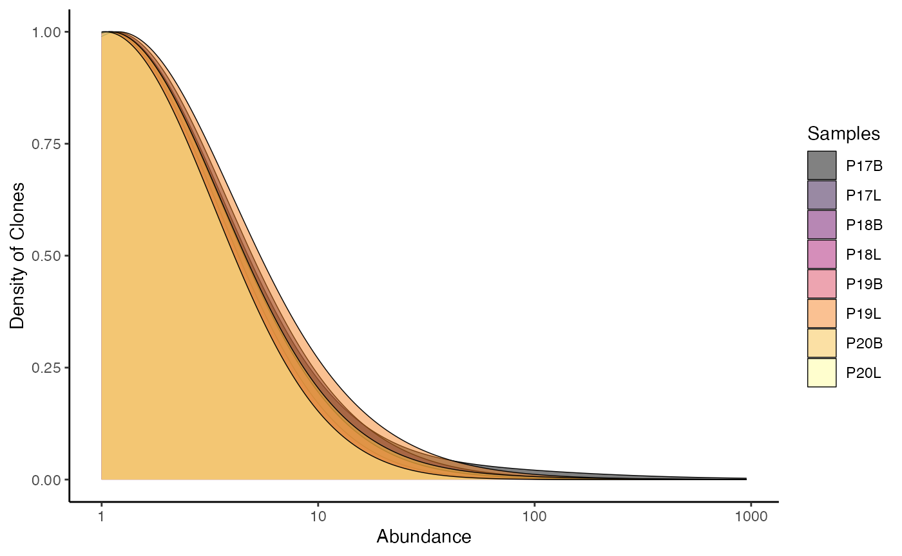
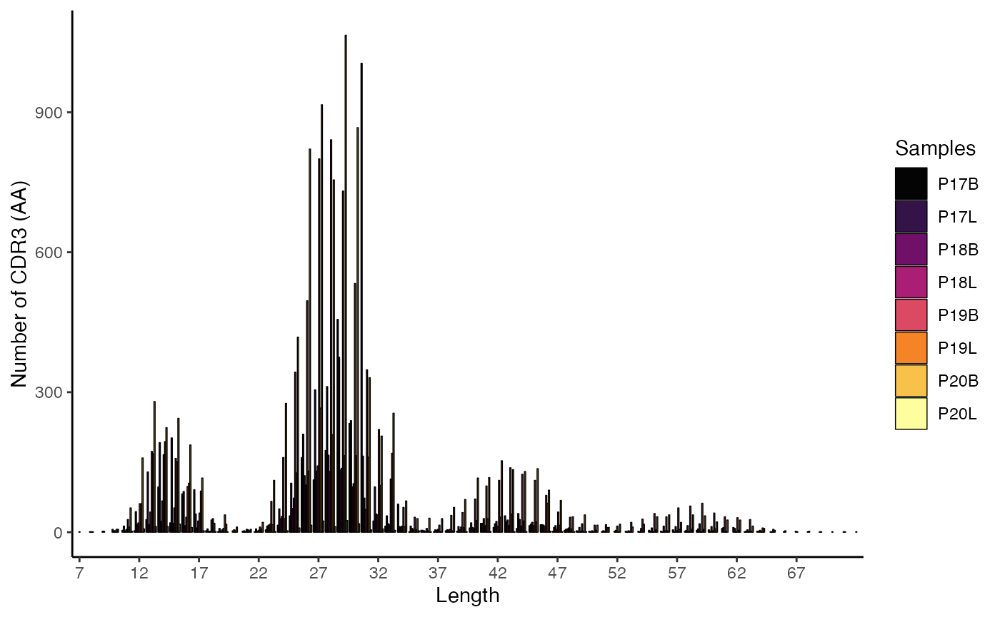
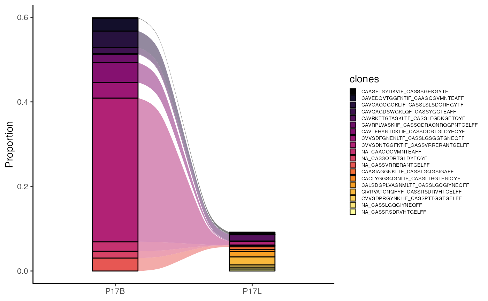
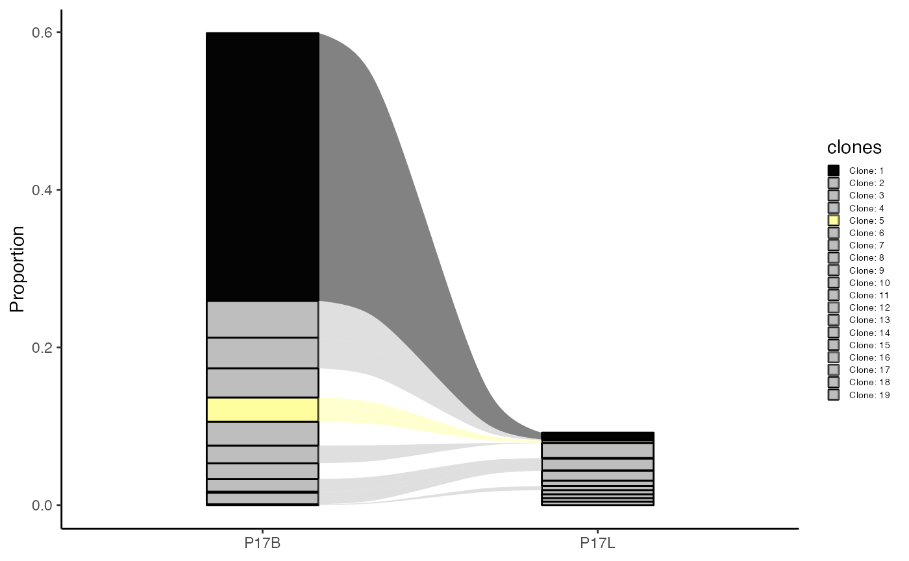
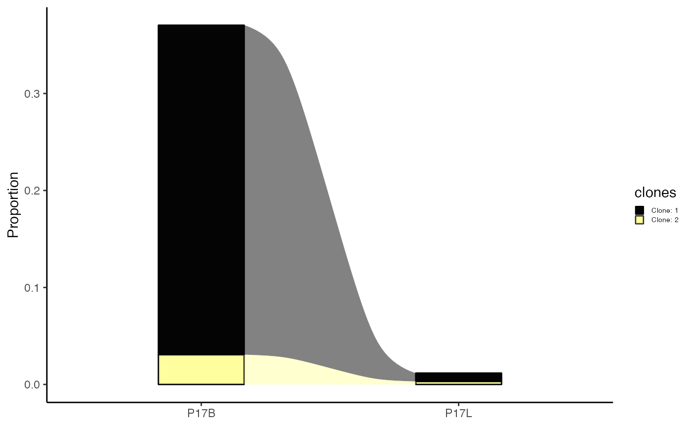
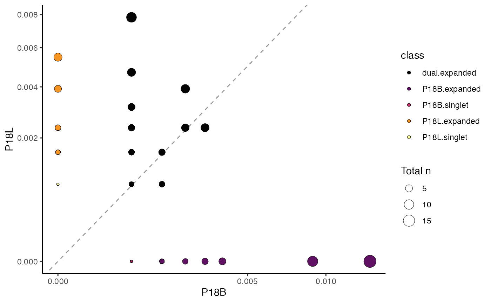

Basic Clonal Visualizations
Compiled: April 03, 2026
Source:vignettes/articles/Clonal_Visualizations.Rmd
Clonal_Visualizations.RmdclonalQuant: Quantifying Unique Clones
The clonalQuant() function is used to explore the clones
by returning the total or relative numbers of unique clones.
Key Parameter(s) for clonalQuant()
-
scale: IfTRUE, converts the output to the relative percentage of unique clones scaled by the total repertoire size; ifFALSE(default), reports the total number of unique clones.
To visualize the relative percent of unique clones across all chains
("both") using the strict clone
definition:
clonalQuant(combined.TCR,
cloneCall="strict",
chain = "both",
scale = TRUE)
Another option is to define the visualization by data classes using
the group.by parameter. Here, we’ll use the
"Type" variable, which was previously added to the
combined.TCR list.
clonalQuant(combined.TCR,
cloneCall="gene",
group.by = "Type",
scale = TRUE)
clonalAbundance: Distribution of Clones by Size
clonalAbundance() allows for the examination of the
relative distribution of clones by abundance. It produces a line graph
showing the total number of clones at specific frequencies within a
sample or group.
Key Parameter(s) for clonalAbundance()
-
scale: IfTRUE, converts the graphs into density plots to show relative distributions; ifFALSE(default), displays raw counts.
To visualize the raw clonal abundance using the gene
clone definition:
clonalAbundance(combined.TCR,
cloneCall = "gene",
scale = FALSE)
clonalAbundance() output can also be converted into a
density plot, which may allow for better comparisons between different
repertoire sizes, by setting scale = TRUE.
clonalAbundance(combined.TCR,
cloneCall = "gene",
scale = TRUE)
clonalLength: Distribution of Sequence Lengths
clonalLength() allows you to look at the length
distribution of the CDR3 sequences. Importantly, unlike the other basic
visualizations, the cloneCall can only be nt
(nucleotide) or aa (amino acid). Due to the method of
calling clones as outlined previously (e.g., using NA for unreturned
chain sequences or multiple chains within a single barcode), the length
distribution may reveal a multimodal curve.
To visualize the amino acid length distribution for both chains (“both”):
clonalLength(combined.TCR,
cloneCall="aa",
chain = "both") 
To visualize the amino acid length distribution for the
TRA chain, scaled as a density plot:
clonalLength(combined.TCR,
cloneCall="aa",
chain = "TRA",
scale = TRUE) 
clonalCompare: Clonal Dynamics Between Categorical Variables
clonalCompare() allows you to look at clones between
samples and changes in dynamics. It is useful for tracking how the
proportions of top clones change between conditions.
Key Parameters for clonalCompare()
-
samples: A character vector to isolate specific samples by their list element name. -
clones: A character vector of specific clonal sequences to visualize. If used,top.cloneswill be ignored. *top.clones: The top n number of clones to graph, calculated based on the frequency within individual samples. -
highlight.clones: A character vector of specific clonal sequences to color; all other clones will be greyed out. -
relabel.clones: IfTRUE, simplifies the legend by labeling isolated clones numerically (e.g., “Clone: 1”). -
graph: The type of plot to generate;alluvial(default) orarea. -
proportion: IfTRUE(default), the y-axis represents proportional abundance; ifFALSE, it represents raw clone counts.
To compare the top 10 clones between samples “P17B” and “P17L” using amino acid sequences as an alluvial plot:
clonalCompare(combined.TCR,
top.clones = 10,
samples = c("P17B", "P17L"),
cloneCall="aa",
graph = "alluvial")
We can also choose to highlight specific clones, such as in the case
of “CVVSDNTGGFKTIF_CASSVRRERANTGELFF” and
“NA_CASSVRRERANTGELFF” using the highlight.clones
parameter. In addition, we can simplify the plot to label the clones as
“Clone: 1”, “Clone: 2”, etc., by setting
relabel.clones = TRUE.
clonalCompare(combined.TCR,
top.clones = 10,
highlight.clones = c("CVVSDNTGGFKTIF_CASSVRRERANTGELFF", "NA_CASSVRRERANTGELFF"),
relabel.clones = TRUE,
samples = c("P17B", "P17L"),
cloneCall="aa",
graph = "alluvial")
Alternatively, if we only want to show specific clones, we can use
the clones parameter.
clonalCompare(combined.TCR,
clones = c("CVVSDNTGGFKTIF_CASSVRRERANTGELFF", "NA_CASSVRRERANTGELFF"),
relabel.clones = TRUE,
samples = c("P17B", "P17L"),
cloneCall="aa",
graph = "alluvial")
clonalScatter: Scatterplot of Two Variables
clonalScatter() organizes two repertoires, quantifies their relative clone sizes, and produces a scatter plot comparing the two samples. Clones are categorized by counts into singlets or expanded, either exclusively present or shared between the selected samples.
Key Parameter(s) for clonalScatter()
-
x.axis,y.axis: Names of the list elements or meta data variable to place on the x-axis and y-axis. -
dot.size: Specifies how dot size is determined;total(default) displays the total number of clones between the x- and y-axis, or a specific list element name for size calculation. -
graph: The type of graph to display;proportionfor the relative proportion of clones (default) orcountfor the total count of clones by sample.
To compare samples “P18B” and “P18L” based on gene clone
calls, with dot size representing the total number of clones, and
plotting clone proportions:
clonalScatter(combined.TCR,
cloneCall ="gene",
x.axis = "P18B",
y.axis = "P18L",
dot.size = "total",
graph = "proportion")
Next Steps
- Visualizing Clonal Dynamics - Explore clonal homeostasis and proportional analysis.
- Comparing Clonal Diversity and Overlap - Diversity metrics, rarefaction, and repertoire overlap.
- Summarizing Repertoires - Gene usage, amino acid properties, and k-mer analysis.
- Combining Clones and Single-Cell Objects - Integrate clonal data with Seurat or SCE objects.